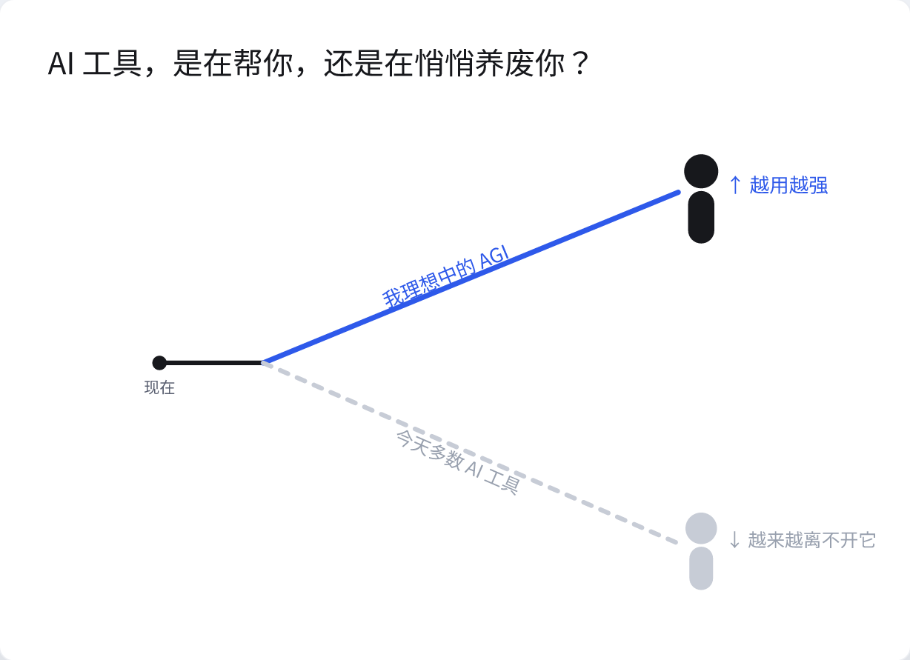
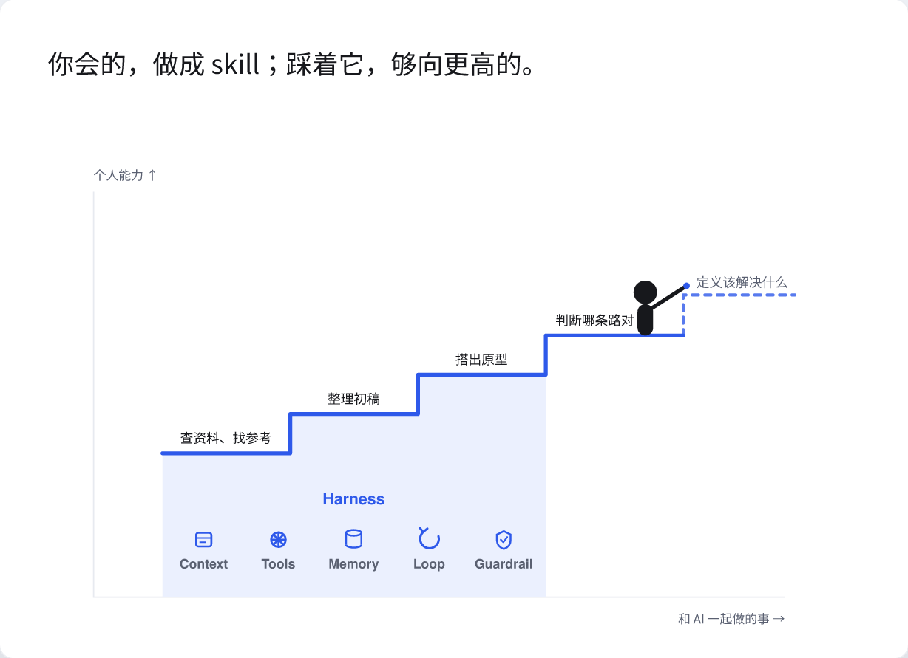
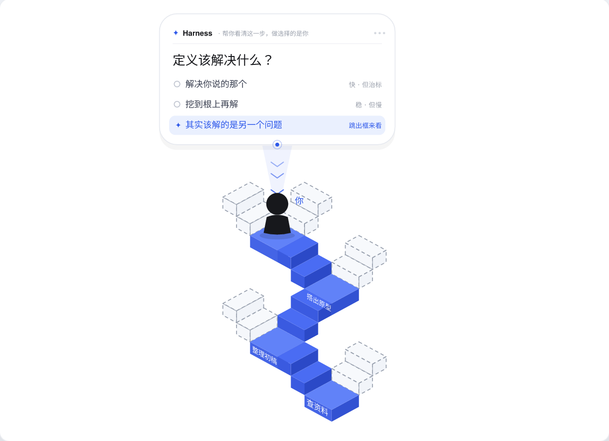

A system of specialized agents that capture, reason over, and deliver a person's memory — coordinating through one shared bus.
Every agent reads from and writes to a single source of truth — the my-memories bus. No agent talks to another directly; the bus is the contract.
my-memories · shared memory bus
single source of truth — all reads & writes flow here
Captures thoughts, links & media via Telegram and an HTTP intake API; structures and scores them into memories.
A conversational thinking partner — surfaces proposals, tracks contradictions, writes a daily system pulse.
Scores memories against a rubric and weaves connections, trends and change-reports across the corpus.
A two-tier news pipeline with editorial triage — delivers only what earns attention, over Telegram.
Renders the system's state into views — this site, the live dashboard and the news report.
Compiles memories into structured knowledge — topology, learning paths and a pedagogical companion.
Also on the bus — triage-loop (loop-engineering pilot, not yet deployed) and news-agent (retired, superseded by the news pipeline).
The same agents, seen as a flow. Everything moves through intake → bus → reason → deliver, with the bus as the spine.
Every agent is held by the same engineering structure: a natural-language contract defines identity, code only executes, models resolve at runtime, permissions narrow the write scope, failures escape out-of-band. Here is one agent, dissected.
A cron job is not a loop. Four primitives turn one into a system that can run unattended — piloted in triage-loop, now being retrofitted onto the production agents.
Every loop has a pulse — cron, poll, or in-process timer. Silence itself becomes detectable.
cron · poll · timer"Done" must be machine-checkable: output schema, source traceability, restart-safe markers.
schema gate · markerThe model that makes never grades itself: Claude drafts, Codex (different vendor) verifies read-only.
cross-vendor reviewFailures write a FAILED marker and alert out-of-band — never a clean-looking empty report.
health_alertThe last structure is the human gate: agents propose, cross-vendor review verifies, a human decides before anything lands. Autonomy is only ever raised domain-by-domain — where changes are reversible, bounded, and auditable.
It runs the repetitive work so you can spend yourself on growing — and every judgment you make quietly teaches it. This is the value layer under everything above, in three cards.


